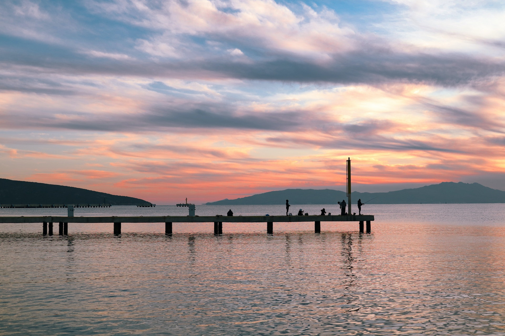

The Town of Topsail Beach offers vacationers a variety of activites during their stay. Our beach where many can enjoy sunbathing, swimming, surfing, fishing and whatever other beach activity vacationers may want to particpate in is an excellent example.

Fishing
For those that like fishing we have the Jolly Roger Fishing Pier, where fishermen of any skill level can try to catch themselves a king mackerel. If you prefer fishing off shore visitors are able to make a reservation on the headboat Queen Jean.
Other Fun Locations
Besides beachside and water based activites Topsail Island has plenty of other fun things to do on land. The Topsail Island Skating Rink is a great option if you want a change of pace and temperature. If putt-putt is more your speed we have the Patio Playground which offers exhilarating putt courses and two arcades.